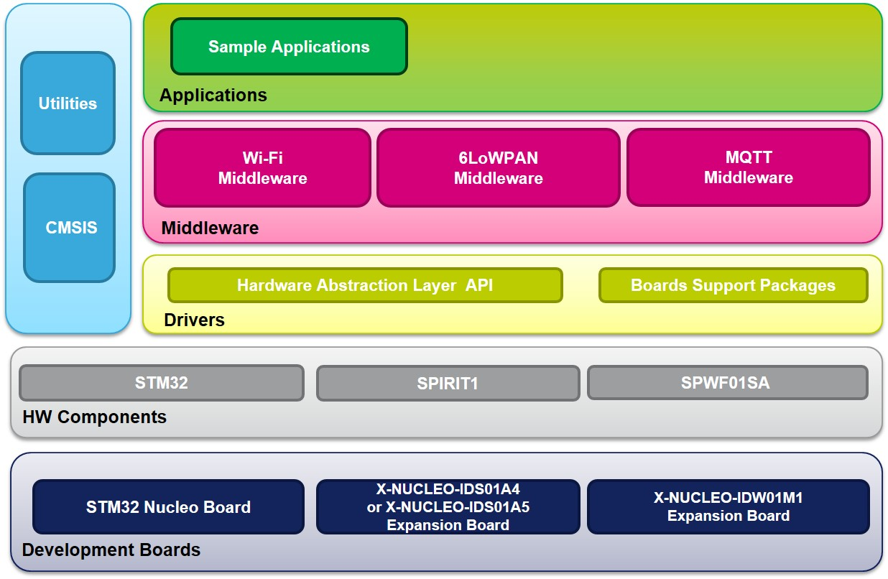

|
FP-NET-6LPWIFI1 is an STM32 ODE Function Pack. Thanks to this package you can connect your IoT node inside a 6LoWPAN Wireless Sensors Network to the Internet, by the means of a Wi-Fi network. This package allows jumpstarting end-to-end IoT development so you can save time in the integration of the different basic functions needed to have a 6LoWPAN node connected to a web based or cloud infrastructure.
FP-NET-6LPWIFI1 software features:
-
Application-level functions to bridge 6LoWPAN and Wi-Fi networks
-
Middleware library with Contiki OS and Contiki 6LoWPAN protocol stack 3.x
-
Support for mesh networking technology by the means of the standard RPL protocol
-
Middleware library for Wi-Fi connectivity using the SPW01SA module
-
Middleware library with MQTT protocol to connect to IBM cloud services
-
Sample application showing a Wi-Fi router that integrates SPWF01Sx, SPIRIT1 and the Contiki OS
-
Sample application showing an Application Level Gateway, from OMA LWM2M to IBM Cloud, that integrates SPWF01Sx, SPIRIT1, Contiki OS and MQTT Paho library.
-
Example implementation available for X-NUCLEO-IDS01Ax and X-NUCLEO-IDW01M1 boards connected to a NUCLEO-F401RE board
-
Binary firmware for wireless sensors nodes available for various configurations
-
Easy portability across different MCU families, thanks to STM32Cube
-
Free, user-friendly license terms
The figure below shows the overall architecture.

Related information and documentation:
Update
History
V2.0.0 / 20-Apr-2017
Main Changes
- New LWM2M to IBM sample application.
- Updated all the Drivers and Middlewares to latest releases.
- Wi-Fi parameters can now be saved to/read from flash memory (for both applications).
Contents
- STM32Cube HAL and Middlewares drivers
- STM32CubeF4 v1.15.0
- X-CUBE-WIFI1 v3.0.1
- X-CUBE-SUBG1 v1.2.0
Development Toolchains and Compilers
- IAR
Embedded Workbench for ARM (EWARM) toolchain v7.80 + ST-LINK
- Keil
Microcontroller Development Kit (MDK-ARM) toolchain v5.23
+ ST-LINK
-
System Workbench for STM32 (SW4STM32) toolchain v1.31.1 + ST-LINK
Supported Devices and EVAL boards
- STM32F401RE devices
- X-NUCLEO-IDW01M1
Wi-Fi Expansion Board
- X-NUCLEO-IDS01Ax
SubGHz Expansion Board
Known Limitations
- Wi-Fi Bridge:
- There is a Hardware limitation on the maximum number of connected clients, in fact SPWF01SA module is limited to a maximum of 8 open sockets
- Only UDP transport protocol is supported at the moment
V1.1.0 / 23-Dec-2016
Main Changes
- Updated all the Drivers and Middlewares to latest releases
- Adopted "Multi" structure for Project
- Added nodes examples for expansion board X-NUCLEO-IKS01A2 (in "Utilities").
Contents
- STM32Cube HAL and Middlewares drivers
- STM32CubeF4 v1.13.1
- X-CUBE-WIFI1 v2.1.1
- X-CUBE-SUBG1 v1.2.0
Development Toolchains and Compilers
- IAR
Embedded Workbench for ARM (EWARM) toolchain v7.80 + ST-LINK
- Keil
Microcontroller Development Kit (MDK-ARM) toolchain v5.18
+ ST-LINK
-
System Workbench for STM32 (SW4STM32) toolchain v1.11 + ST-LINK
Supported Devices and EVAL boards
- STM32F401RE devices
- X-NUCLEO-IDW01M1
Wi-Fi Expansion Board
- X-NUCLEO-IDS01Ax
SubGHz Expansion Board
Known Limitations
- There is a Hardware limitation on the maximum number of connected clients, in fact SPWF01SA module is limited to a maximum of 8 open sockets
- Only UDP transport protocol is supported at the moment
V1.0.1 / 13-Dec-2016
Main Changes
- Bug fix for X-NUCLEO-IDS01A5 binary images in Utilities folder
V1.0.0 / 07-Oct-2016
Main Changes
- First official release of the
FP-NET-6LPWIFI1 package
Contents
- STM32Cube HAL and Middlewares drivers
- STM32CubeF4 v1.11.0
- X-CUBE-WIFI1 v2.0.0
- X-CUBE-SUBG1 v1.1.1
Development Toolchains and Compilers
- IAR
Embedded Workbench for ARM (EWARM) toolchain v7.70 + ST-LINK
- Keil
Microcontroller Development Kit (MDK-ARM) toolchain v5.18
+ ST-LINK
-
System Workbench for STM32 (SW4STM32) toolchain v1.10 + ST-LINK
Supported Devices and EVAL boards
- STM32F401RE devices
- X-NUCLEO-IDW01M1
Wi-Fi Expansion Board
- X-NUCLEO-IDS01Ax
SubGHz Expansion Board
Known Limitations
- There is a Hardware limitation on the maximum number of connected clients, in fact SPWF01SA module is limited to a maximum of 8 open sockets
- Only UDP transport protocol is supported at the moment
License
Licensed under Software License Agreement SLA0055, (the "License"). You may
not use this package
except in compliance with the License. You may obtain a copy of the
License at:
For complete documentation on STM32 ODE visit www.st.com/stm32ode
|